近端策略优化算法
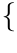
joschu, filip, prafulla, alec, oleg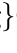
@openai.com摘要
我们提出了一类用于强化学习的新的策略梯度方法，它们在通过与环境交互采样数据与使用随机梯度上升优化一个“替代”目标函数之间交替进行。标准的策略梯度方法对每个数据样本执行一次梯度更新，而我们提出了一种新颖的目标函数，它能够支持多个轮次的小批量更新。我们将这些新方法称为近端策略优化（PPO），它们具有信赖域策略优化（TRPO）的某些优点，但实现起来简单得多、更具通用性，并且（在经验上）具有更好的样本复杂度。我们的实验在一组基准任务上测试了 PPO，包括模拟机器人运动和 Atari 游戏博弈，结果表明 PPO 优于其他在线策略梯度方法，并且总体上在样本复杂度、简单性和实际运行时间之间取得了良好的平衡。
1 引言
近年来，针对使用神经网络函数逼近器的强化学习，人们提出了几种不同的方法。主要的竞争者包括深度
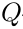
-学习 [Mni+15]、“原始”策略梯度方法 [Mni+16]，以及信赖域 / 自然策略梯度方法 [Sch+15b]。然而，在开发一种既可扩展（适用于大型模型和并行实现）、又数据高效且鲁棒（即在无需超参数调优的情况下能在各种问题上取得成功）的方法方面，仍有改进空间。（带函数逼近的）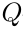
-学习在许多简单问题上失败1，且人们对其理解不足；原始策略梯度方法的数据效率和鲁棒性较差；而信赖域策略优化（TRPO）相对复杂，且与包含噪声（如 dropout）或参数共享（在策略与价值函数之间，或与辅助任务之间）的架构不兼容。本文试图通过引入一种算法来改善现状，该算法在仅使用一阶优化的情况下，达到 TRPO 的数据效率和可靠性能。我们提出了一种带有裁剪概率比的新颖目标，它构成对策略性能的悲观估计（即下界）。为了优化策略，我们在从策略中采样数据与对采样数据执行若干轮次优化之间交替进行。
我们的实验比较了替代目标的多个不同版本的性能，发现带有裁剪概率比的版本表现最佳。我们还将 PPO 与文献中的几种先前算法进行了比较。在连续控制任务上，它优于我们对比的算法。在 Atari 上，它（在样本复杂度方面）显著优于 A2C，并且与 ACER 相近，尽管它要简单得多。
1虽然 DQN 在诸如 Arcade Learning Environment [Bel+15] 这类具有离散动作空间的游戏环境中表现良好，但尚未被证明在如 OpenAI Gym [Bro+16] 中以及由 Duan 等人 [Dua+16] 所描述的连续控制基准上具有良好表现。
2 背景：策略优化
2.1 策略梯度方法
策略梯度方法通过计算策略梯度的估计量并将其代入随机梯度上升算法来工作。最常用的梯度估计量具有如下形式
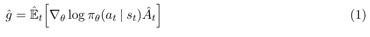
其中
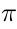
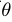
是随机策略，ˆ
 是在时间步
是在时间步 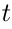
处优势函数的估计量。这里，期望 ˆ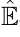
 [
[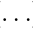
] 表示在采样与优化交替进行的算法中，对有限批次样本的经验平均。使用自动微分软件的实现通过构造一个目标函数来工作，该目标函数的梯度即为策略梯度估计量；估计量 ˆ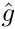
通过对该目标求导获得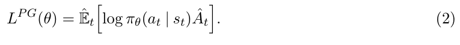
虽然使用同一轨迹在此损失
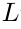
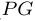
上执行多步优化很有吸引力，但这样做缺乏充分依据，并且在经验上它常常导致破坏性的大幅策略更新（见第 6.1 节；结果未展示，但与“无裁剪或惩罚”设置相似或更差）。2.2 信赖域方法
在 TRPO [Sch+15b] 中，在策略更新大小的约束下最大化一个目标函数（“替代”目标）。具体而言，
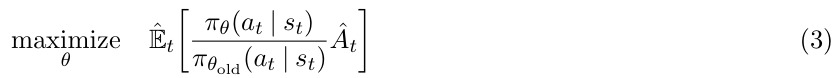
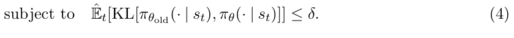
这里，
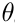
old 是更新前的策略参数向量。在对目标做线性近似并对约束做二次近似之后，该问题可以使用共轭梯度算法高效地近似求解。论证 TRPO 的理论实际上建议使用惩罚而非约束，即求解无约束优化问题
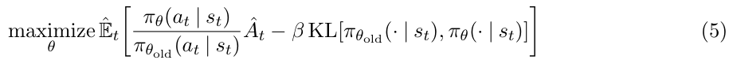
其中
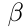
为某个系数。这源于以下事实：某个替代目标（它计算的是各状态上 KL 的最大值而非均值）构成对策略性能的下界（即悲观界）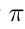
。TRPO 使用硬约束而非惩罚，是因为很难选择一个单一的 值就能在不同问题上表现良好——甚至在同一问题内也是如此，因为其特征在学习过程中会发生变化。因此，为实现我们模拟 TRPO 单调改进的一阶算法这一目标，实验表明仅选择一个固定的惩罚系数
值就能在不同问题上表现良好——甚至在同一问题内也是如此，因为其特征在学习过程中会发生变化。因此，为实现我们模拟 TRPO 单调改进的一阶算法这一目标，实验表明仅选择一个固定的惩罚系数  并用 SGD 优化惩罚目标式（5）是不够的；还需要额外的修改。
并用 SGD 优化惩罚目标式（5）是不够的；还需要额外的修改。 3 裁剪替代目标
令 表示概率比 ，因此 。TRPO 最大化一个“替代”目标
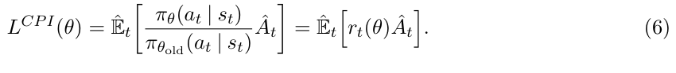
上标
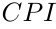
指保守策略迭代 [KL02]，该目标正是在其中被提出的。在没有约束的情况下，最大化
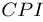
会导致过大的策略更新；因此，我们现在考虑如何修改该目标，以惩罚那些使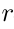
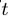
( ) 偏离 1 的策略变化。
) 偏离 1 的策略变化。 我们提出的主要目标如下：
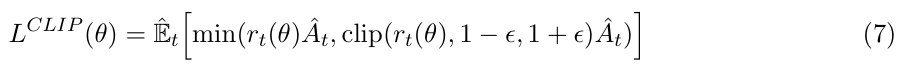
其中 epsilon 是一个超参数，例如，
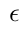
= 02。该目标的动机如下。min 内的第一项是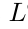
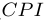
。第二项 clip(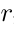
 (
( )
)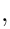
1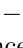
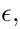
1+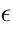
) ˆ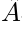
，通过裁剪概率比来修改替代目标，从而消除了使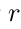
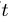
移出区间 [1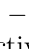
 1 +
1 +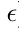
] 的激励。最后，我们取裁剪后目标和未裁剪目标的最小值，因此最终目标是未裁剪目标的下界（即悲观界）。采用这一方案，我们仅在概率比的变化会使目标改善时忽略它，而在它使目标变差时将其纳入。请注意，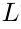
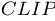
(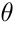
) =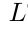
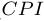
() 在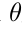
old 附近（即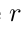
= 1 处）的一阶近似下成立，然而，当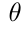
偏离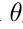
old 时，它们会变得不同。图 1 绘制了一个单项（即单个 ），该项来自
），该项来自 
 ；请注意，根据优势为正还是为负，概率比
；请注意，根据优势为正还是为负，概率比 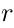
在 1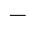
或 1 + 处被裁剪。
处被裁剪。 图 2 提供了关于替代目标 的另一个直观来源。它展示了当我们在一个连续控制问题上沿策略更新方向插值时（该方向由近端策略优化——我们稍后将介绍的算法——获得），若干目标如何变化。我们可以看到， 是
是  的下界，并对过大的策略更新施加了惩罚。
的下界，并对过大的策略更新施加了惩罚。
4 自适应 KL 惩罚系数
另一种方法，可作为裁剪替代目标的替代方案或在其之上额外使用，即对 KL 散度施加惩罚，并调整惩罚系数，使得我们在每次策略更新时达到 KL 散度 targ 的某个目标值。在我们的实验中，我们发现 KL 惩罚的表现比裁剪替代目标差，然而，我们在此列出它，因为它是一个重要的基线。
在该算法最简单的实例中，我们在每次策略更新中执行以下步骤：
使用若干轮次的小批量 SGD，优化 KL 惩罚目标
计算 = ˆ[KL[old()()]]
– 如果 targ1 5，则 2
5，则 2
– 如果 targ 15，则  2
2
更新后的 用于下一次策略更新。采用这一方案，我们偶尔会看到 KL 散度与 targ 显著不同的策略更新，然而，这些情况很少见，并且  会迅速调整。上述参数 1
会迅速调整。上述参数 1 5 和 2 是启发式选取的，但算法对它们并不十分敏感。 的初始值是另一个超参数，但在实践中并不重要，因为算法会很快调整它。
5 和 2 是启发式选取的，但算法对它们并不十分敏感。 的初始值是另一个超参数，但在实践中并不重要，因为算法会很快调整它。
5 算法
前几节中的替代损失可以在对典型策略梯度实现做少量修改的情况下进行计算和求导。对于使用自动微分的实现，只需构造损失 或 ，而非  ，并对该目标执行多步随机梯度上升即可。
，并对该目标执行多步随机梯度上升即可。
大多数用于计算方差缩减优势函数估计量的技术都利用一个学习到的状态价值函数 （）；例如，广义优势估计 [Sch+15a]，或
[Mni+16] 中的有限时域估计量。如果使用在策略与价值函数之间共享参数的神经网络架构，我们必须使用一个将策略替代项与价值函数误差项结合起来的损失函数。该目标还可以通过添加熵奖励来进一步增广，以确保充分的探索，正如以往工作所建议的 [Wil92; Mni+16]。结合这些项，我们得到以下目标，它在每次迭代中被（近似地）最大化：
其中 是系数， 表示熵奖励， 是平方误差损失 。
一种在 [Mni+16] 中被推广、且非常适合与循环神经网络配合使用的策略梯度实现风格，运行策略 个时间步（其中  远小于回合长度），并使用收集到的样本进行一次更新。这种风格需要一个不超出时间步 的优势估计量。[Mni+16] 所使用的估计量为
远小于回合长度），并使用收集到的样本进行一次更新。这种风格需要一个不超出时间步 的优势估计量。[Mni+16] 所使用的估计量为
其中 指定了位于 [0] 中的时间索引，该索引属于给定的长度为  的轨迹段。推广这一选择，我们可以使用广义优势估计的截断版本，它会退化为式（10），条件为 = 1：
的轨迹段。推广这一选择，我们可以使用广义优势估计的截断版本，它会退化为式（10），条件为 = 1：
下面展示了一个使用固定长度轨迹段的近端策略优化（PPO）算法。每次迭代， 个（并行）演员各自收集 个时间步的数据。然后我们在这些 个时间步的数据上构造替代损失，并用小批量 SGD（或者通常为了更好的性能，使用 Adam [KB14]）对其进行 个轮次的优化。
6 实验
6.1 替代目标的比较
首先，我们比较了在不同超参数下的几种不同的替代目标。这里，我们将替代目标 与几种自然的变体和消融版本进行比较。
不裁剪且无惩罚： (
( ) =
) =
 () ˆ
() ˆ

裁剪：( ) = min(() ˆ
) = min(() ˆ clip((
clip(( )) 1 1 +) ˆ
)) 1 1 +) ˆ
KL 惩罚（固定或自适应）
 (
( ) =(
) =( ) ˆ
) ˆ KL[old]
KL[old]
对于 KL 惩罚，既可以使用固定惩罚系数，也可以使用如第4节所述的自适应系数，并采用目标 KL 值targ。请注意，我们也在对数空间中尝试了裁剪，但发现性能并没有更好。
由于我们要为每种算法变体搜索超参数，因此选择了一个计算开销较小的基准来测试这些算法。具体而言，我们使用了7个模拟机器人任务2
这些任务在 OpenAI Gym [Bro+16] 中实现，并使用 MuJoCo [TET12] 物理引擎。我们在每个任务上训练一百万个时间步。除了我们要搜索的裁剪超参数（）和 KL 惩罚超参数（targ）之外，其他超参数见表 3。
为了表示策略，我们使用了一个全连接 MLP，包含两个各含 64 个单元的隐藏层以及 tanh 非线性，输出高斯分布的均值，标准差可变，遵循 [Sch+15b; Dua+16]。策略与价值函数之间不共享参数（因此系数 1 无关紧要），并且我们不使用熵奖励。
每种算法都在全部 7 个环境上运行，每个环境使用 3 个随机种子。我们通过计算最后 100 个回合的平均总奖励来为算法的每次运行评分。我们对每个环境的分数进行平移和缩放，使随机策略的得分为 0，并将最佳结果设为 1，然后对 21 次运行取平均，为每个算法设置生成一个单一标量。
结果见表 1。请注意，对于不裁剪且无惩罚的设置，得分为负，因为在某个环境（half cheetah）上它会导致非常负的分数，比初始随机策略还差。
6.2 与连续域中其他算法的比较
接下来，我们将 PPO（采用第 3 节中的“裁剪”替代目标）与文献中若干其他方法进行比较，这些方法被认为对连续问题有效。我们与以下算法的调优实现进行了比较：信赖域策略优化 [Sch+15b]、交叉熵方法（CEM）[SL06]、带自适应步长的原版策略梯度3，
2HalfCheetah、Hopper、InvertedDoublePendulum、InvertedPendulum、Reacher、Swimmer 和 Walker2d，均为“-v1”3在每批数据之后，Adam 步长根据原始策略和更新后策略的 KL 散度进行调整，使用与第 4 节所示规则类似的规则。实现可在 https://github.com/ berkeleydeeprlcourse/homework/tree/master/hw4 获取。
A2C [Mni+16]、带信赖域的 A2C [Wan+16]。A2C 代表优势演员—评论家，是 A3C 的同步版本，我们发现其性能与异步版本相同或更好。对于 PPO，我们使用上一节的超参数，其中 = 02。我们看到，PPO 在几乎所有连续控制环境上都优于先前的方法。
6.3 连续域展示：人形机器人奔跑与转向
为了展示 PPO 在高维连续控制问题上的性能，我们在一组涉及 3D 人形机器人的问题上进行训练，其中机器人必须奔跑、转向并从地面爬起，可能还会被方块击中。我们测试的三个任务是（1）RoboschoolHumanoid：仅向前运动，（2）RoboschoolHumanoidFlagrun：目标位置每 200 个时间步或在到达目标时随机变化，（3）RoboschoolHumanoid-FlagrunHarder，其中机器人被方块击中并且需要从地面爬起。学习策略的静帧见图 5，三个任务的学习曲线见图 4。超参数见表 4。在同期工作中，Heess 等人 [Hee+17] 使用 PPO 的自适应 KL 变体（第 4 节）来学习 3D 机器人的运动策略。
6.4 在 Atari 域上与其他算法的比较
我们还在 Arcade Learning Environment [Bel+15] 基准上运行了 PPO，并与调优良好的 A2C [Mni+16] 和 ACER [Wan+16] 实现进行了比较。对于所有三种算法，我们使用了与 [Mni+16] 中相同的策略网络架构。PPO 的超参数见表 5。对于另外两种算法，我们使用了为在该基准上最大化性能而调优的超参数。
全部 49 个游戏的结果表和学习曲线见附录 B。我们考虑以下两个评分指标：（1）整个训练期间每个回合的平均奖励（有利于快速学习），以及（2）训练最后 100 个回合中每个回合的平均奖励（有利于最终性能）。表 2 显示了每种算法“获胜”的游戏数量，其中我们通过对三次试验的评分指标取平均来计算胜者。
7 结论
我们引入了近端策略优化，这是一族策略优化方法，在每次策略更新时使用多个轮次的随机梯度上升。这些方法具有信赖域方法的稳定性和可靠性，但实现起来要简单得多，只需对原版策略梯度实现做几行代码改动，适用于更一般的设置（例如，当策略和价值函数使用联合架构时），并且具有更好的整体性能。
8 致谢
感谢 OpenAI 的 Rocky Duan、Peter Chen 等人提出的深刻见解。
参考文献
[Bel+15] M. Bellemare, Y. Naddaf, J. Veness, and M. Bowling. “The arcade learning environment: An evaluation platform for general agents”. In: Twenty-Fourth International Joint Conference on Artificial Intelligence. 2015.
[Bro+16] G. Brockman, V. Cheung, L. Pettersson, J. Schneider, J. Schulman, J. Tang, and W. Zaremba. “OpenAI Gym”. In: arXiv preprint arXiv:1606.01540 (2016).
[Dua+16] Y. Duan, X. Chen, R. Houthooft, J. Schulman, and P. Abbeel. “Benchmarking Deep Reinforcement Learning for Continuous Control”. In: arXiv preprint arXiv:1604.06778 (2016).
[Hee+17] N. Heess, S. Sriram, J. Lemmon, J. Merel, G. Wayne, Y. Tassa, T. Erez, Z. Wang, A. Eslami, M. Riedmiller, et al. “Emergence of Locomotion Behaviours in Rich Environments”. In: arXiv preprint arXiv:1707.02286 (2017).
[KL02] S. Kakade and J. Langford. “Approximately optimal approximate reinforcement learning”. In: ICML. Vol. 2. 2002, pp. 267–274.
[KB14] D. Kingma and J. Ba. “Adam: A method for stochastic optimization”. In: arXiv preprint arXiv:1412.6980 (2014).
[Mni+15] V. Mnih, K. Kavukcuoglu, D. Silver, A. A. Rusu, J. Veness, M. G. Bellemare, A. Graves, M. Riedmiller, A. K. Fidjeland, G. Ostrovski, et al. “Human-level control through deep reinforcement learning”. In: Nature 518.7540 (2015), pp. 529–533.
[Mni+16] V. Mnih, A. P. Badia, M. Mirza, A. Graves, T. P. Lillicrap, T. Harley, D. Silver, and K. Kavukcuoglu. “Asynchronous methods for deep reinforcement learning”. In: arXiv preprint arXiv:1602.01783 (2016).
[Sch+15a] J. Schulman, P. Moritz, S. Levine, M. Jordan, and P. Abbeel. “High-dimensional continuous control using generalized advantage estimation”. In: arXiv preprint arXiv:1506.02438 (2015).
[Sch+15b] J. Schulman, S. Levine, P. Moritz, M. I. Jordan, and P. Abbeel. “Trust region policy optimization”. In: CoRR, abs/1502.05477 (2015).
[SL06] I. Szita and A. L ̈orincz. “Learning Tetris using the noisy cross-entropy method”. In: Neural computation 18.12 (2006), pp. 2936–2941.
[TET12] E. Todorov, T. Erez, and Y. Tassa. “MuJoCo: A physics engine for model-based control”. In: Intelligent Robots and Systems (IROS), 2012 IEEE/RSJ International Conference on. IEEE. 2012, pp. 5026–5033.
[Wan+16] Z. Wang, V. Bapst, N. Heess, V. Mnih, R. Munos, K. Kavukcuoglu, and N. de Freitas.“Sample Efficient Actor-Critic with Experience Replay”. In: arXiv preprint arXiv:1611.01224 (2016).
[Wil92] R. J. Williams. “Simple statistical gradient-following algorithms for connectionist reinforcement learning”. In: Machine learning 8.3-4 (1992), pp. 229–256.
A 超参数
B 在更多 Atari 游戏上的性能
这里我们包括了 PPO 与 A2C 在更大一组 49 个 Atari 游戏上的比较。图 6 显示了三个随机种子各自的学习曲线，而表 6 显示了平均性能。